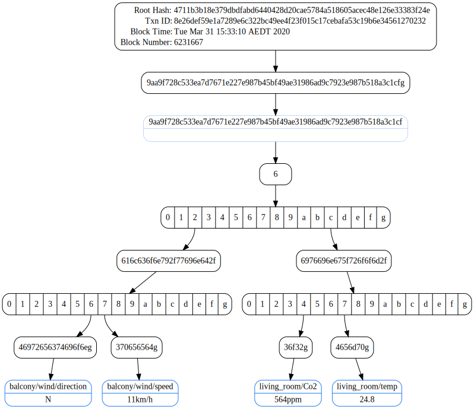

Getting started
To add the Proofable package to your Golang project, just run:
go get github.com/SouthbankSoftware/proofable
Now, let's go through a hello world example to:
-
create a Proofable API client
-
prove a bunch of key-values to Ethereum Testnet within a minute
-
create a proof for them
-
verify the proof
-
extract a subproof for just one key-value out of the proof
-
verify the subproof independently
The packages in pkg altogether resembles a Go SDK for Proofable, which provides great convenience when consuming proofable-api
You can find the complete example source code here, which can be run as:
go run examples/example.go
Step 1: authenticate with ProvenDB
This step will authenticate with ProvenDB so you can access proofable-api. When you are successfully authenticated, an access token will be saved to a global location on your machine. On Mac, it is located at ~/Library/Application\ Support/ProvenDB/auth.json. The next time, when you invoke AuthenticateForGRPC, it will automatically use the saved token without prompting you to go through the authentication steps again. You can find more details from here. Please note that this authenticaton method is temporary, which will be replaced by an API key soon
creds, err := authcli.AuthenticateForGRPC(ctx,
"https://apigateway.provendb.com",
true,
"",
)
Step 2: create a Proofable API client
This step creates a Proofable API gRPC client (cli) to be used in a closure. When the closure exits, the client will be automatically destroyed. You could also create a client without a closure using NewAPIClient, but in that case, you have to manually destroy the client after use
api.WithAPIClient(
"api.provendb.com:443",
creds,
func(cli apiPB.APIServiceClient) error {
// make use of the `cli` in this closure
})
Step 3: create an empty trie
This step creates an empty trie, which is a dictionary that can hold key-values, to be used in a closure. When the closure exits, the trie will be automatically destroyed. You could also create an empty trie without a closure using CreateTrie, but in that case, you have to manually destroy the trie using DeleteTrie or wait for proofable-api to garbage collect it
api.WithTrie(ctx, cli, func(id, root string) error {
// make use of the trie, identified by the `id`, in this closure. The root will always be 0000000000000000000000000000000000000000000000000000000000000000 for an empty trie
})
Step 4: set the key-values we want to prove
This step sets a bunch of key-values that we want to prove in the trie we have just created. In the example, they are my home sensor readings. Both key and value can be arbitrary binaries. They key order doesn't matter. When getting key-values from the trie, e.g. GetTrieKeyValues, they will always be sorted according to the key's alphabetical order. When setting key-values, you can also make multiple SetTrieKeyValues calls as a way to build up a large trie incrementally
root, err := api.SetTrieKeyValues(ctx, cli, id, root,
[]*apiPB.KeyValue{
{Key: []byte("balcony/wind/speed"), Value: []byte("11km/h")},
{Key: []byte("balcony/wind/direction"), Value: []byte("N")},
{Key: []byte("living_room/temp"), Value: []byte("24.8℃")},
{Key: []byte("living_room/Co2"), Value: []byte("564ppm")},
})
Step 5: create a proof for the key-values
This step creates a proof, a.k.a. trie proof, to prove the trie at the given root to Ethereum (ETH). Please refer to this for all available anchor types. The trie at the given root contains all the key-values we want to prove. When the trie is proven, so are the key-values contained in
triePf, err := api.CreateTrieProof(ctx, cli, id, root, anchorPB.Anchor_ETH)
Step 6: wait for the proof to be anchored to Ethereum
This step waits the proof we have just created until it is anchored to Ethereum, during which we output the anchoring progress
tpCH, errCH := api.SubscribeTrieProof(ctx, cli, id, triePf.GetId())
for tp := range tpCH {
log.Printf("Anchoring proof: %s\n", tp.GetStatus())
triePf = tp
if tp.GetStatus() == anchorPB.Batch_ERROR {
return errors.New(tp.GetError())
}
}
// always check error from the error channel
err = <-errCH
Step 7: verify the proof
This step verifies the proof we have just created. The verification is supposed to be run at any time after the proof has been created and when we want to make sure our proof is valid as well as retrieving information out from the proof
kvCH, rpCH, errCH := api.VerifyTrieProof(ctx, cli, id, triePf.GetId(),
true, "proof.dot")
// strip the anchor trie part from each key
kvCH = api.InterceptKeyValueStream(ctx, kvCH,
api.StripCompoundKeyAnchorTriePart)
log.Println("key-values contained in the proof:")
for kv := range kvCH {
log.Printf("\t%s -> %s\n",
strutil.String(kv.Key), strutil.String(kv.Value))
}
// always check error from the error channel
err = <-errCH
if err != nil {
return err
}
rp := <-rpCH
if !rp.GetVerified() {
return fmt.Errorf("falsified proof: %s", rp.GetError())
}
log.Printf("the proof with a root hash of %s is anchored to %s in block %v with transaction %s at %s, which can be viewed at %s\n",
triePf.GetProofRoot(),
triePf.GetAnchorType(),
triePf.GetBlockNumber(),
triePf.GetTxnId(),
time.Unix(int64(triePf.GetBlockTime()), 0).Format(time.UnixDate),
triePf.GetTxnUri(),
)
This step will output the key-values contained in the proof:
balcony/wind/direction -> N
balcony/wind/speed -> 11km/h
living_room/Co2 -> 564ppm
living_room/temp -> 24.8℃
and a summary:
the proof with a root hash of 4711b3b18e379dbdfabd6440428d20cae5784a518605acec48e126e33383f24e is anchored to ETH in block 6231667 with transaction 8e26def59e1a7289e6c322bc49ee4f23f015c17cebafa53c19b6e34561270232 at Tue Mar 31 15:33:10 AEDT 2020, which can be viewed at https://rinkeby.etherscan.io/tx/0x8e26def59e1a7289e6c322bc49ee4f23f015c17cebafa53c19b6e34561270232
and a Graphviz Dot Graph (proof.dot):

Step 8: extract a subproof for just one key-value out of the proof
This step extracts a subproof, a.k.a. key-values proof, out of the proof we have just created. The subproof proves the key living_room/Co2 only and nothing else. A subproof file named living_room_Co2.subproofable will be created in current working directory. You could also create a subproof for multiple key-values
api.CreateKeyValuesProof(ctx, cli, id, triePf.GetId(),
&apiPB.KeyValuesFilter{
Keys: []*apiPB.Key{
{Key: []byte("living_room/Co2")},
},
},
"living_room_Co2.subproofable")
Step 9: verify the subproof independently
This step independently verifies the subproof we have just created. The only thing needed in order to verify the subproof is the subproof file itself. The verification is supposed to be run at any time after the subproof has been created and when we want to make sure our subproof is valid as well as retrieving information out from the subproof
kvCH, rpCH, errCH := api.VerifyKeyValuesProof(ctx, cli,
"living_room_Co2.subproofable",
true, "living_room_Co2_subproof.dot")
// strip the anchor trie part from each key
kvCH = api.InterceptKeyValueStream(ctx, kvCH,
api.StripCompoundKeyAnchorTriePart)
log.Println("key-values contained in the subproof:")
for kv := range kvCH {
log.Printf("\t%s -> %s\n",
strutil.String(kv.Key), strutil.String(kv.Value))
}
// always check error from the error channel
err = <-errCH
if err != nil {
return err
}
rp := <-rpCH
if !rp.GetVerified() {
return fmt.Errorf("falsified subproof: %s", rp.GetError())
}
et, err := api.GetEthTrieFromKeyValuesProof("living_room_Co2.subproofable")
if err != nil {
return err
}
merkleRoot := hex.EncodeToString(et.Root())
log.Printf("the subproof with a root hash of %s is anchored to %s in block %v with transaction %s at %s, which can be viewed at %s\n",
merkleRoot,
et.AnchorType,
et.BlockNumber,
et.TxnID,
time.Unix(int64(et.BlockTime), 0).Format(time.UnixDate),
et.TxnURI,
)
This step will output the key-values contained in the subproof:
living_room/Co2 -> 564ppm
and a summary:
the subproof with a root hash of 4711b3b18e379dbdfabd6440428d20cae5784a518605acec48e126e33383f24e is anchored to ETH in block 6231667 with transaction 8e26def59e1a7289e6c322bc49ee4f23f015c17cebafa53c19b6e34561270232 at Tue Mar 31 15:33:10 AEDT 2020, which can be viewed at https://rinkeby.etherscan.io/tx/0x8e26def59e1a7289e6c322bc49ee4f23f015c17cebafa53c19b6e34561270232
and a Graphviz Dot Graph (living_room_Co2_subproof.dot):